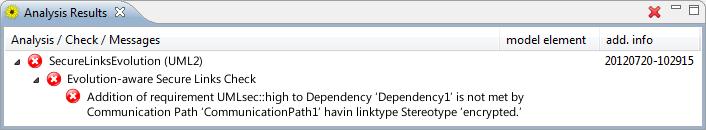

This check analyzes the evolution of UML deployment diagrams in regard to the «secure links» property. To analyze the evolution of a model, the original model has to be secure in regard to the corresponding non-evolutionary check. To make sure that is the case please use the Static Secure Links Check.
The table below explains the UMLchange syntax for new model elements of deployment diagrams. The metaclasses whose key-value pairs are simple are omitted.
| Model Element | Metaclass(if different) | Key | AppropriateValues |
|---|---|---|---|
| Deployment | name | String value | |
| deployedArtifact | qualified name of Artifact | ||
| location | qualified name of Node | ||
| CommunicationPath | name | String value | |
| source | qualified name of Node | ||
| target | qualified name of Node |
Annotate the secure model with the desired evolutionary changes by using the UMLchange profile extensions. After finishing the model, create a new CARiSMA analysis on the model. Add the Evolution-aware Secure Links Check to the used checks and click "Run" to start the analysis.
The Analysis Results View displays whether the check was successful. If any evolutionary step results in a violation of the «secure links» property, the resulting violation is displayed in the Analysis Results View.

The example model describes an evolution that adds a requirement to a dependency without substituting the corresponding linktype.

After adding the necessary evolutionary steps to the model, the analysis reports the success of the check.